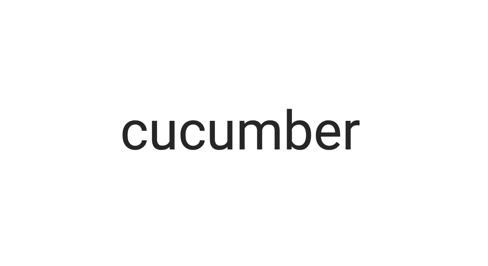
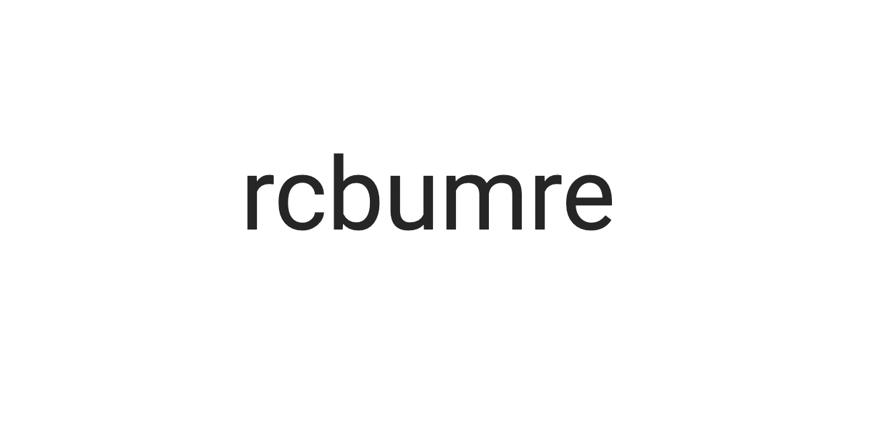

<!DOCTYPE html>
<html>
  <head>
    <title>My experiment</title>
    <script src="https://unpkg.com/jspsych@7.3.1"></script>
    <script src="https://unpkg.com/@jspsych/plugin-html-keyboard-response@1.1.2"></script>
    <script src="https://unpkg.com/@jspsych/plugin-image-keyboard-response@1.1.2"></script>
    <script src="https://unpkg.com/@jspsych/plugin-preload@1.1.2"></script>
    <link href="https://unpkg.com/jspsych@7.3.1/css/jspsych.css" rel="stylesheet" type="text/css" />
  </head>
  <body></body>
  <script>


    /* initialize jsPsych */
    var jsPsych = initJsPsych({
      on_finish: function() {
        jsPsych.data.displayData();
      }
    });

    /* create timeline */
    var timeline = [];

    // /* preload images */
    // var preload = {
    //   type: jsPsychPreload,
    //   images: ['img-2/real-word.png', 'img-2/fake-word.png']
    // };
    // timeline.push(preload);

    /* define welcome message trial */
    var welcome = {
      type: jsPsychHtmlKeyboardResponse,
      stimulus: "Welcome to the experiment. Press any key to begin."
    };
    timeline.push(welcome);

    /* define instructions trial */
    var instructions = {
      type: jsPsychHtmlKeyboardResponse,
      stimulus: `
        <p>Today you will be taking part in the lexical decision task.</p><p>You must decide if the word that appears on 
        the screen is a real word.</p><p>Press the letter F on the keyboard as fast as you can once you see a <strong>real</strong> word.</p>
        <p>Press the letter J as fast as you can once you see a <strong>fake</strong> word. </p>
        <div style='width: 700px;'>
        <div style='float: left;'></img>
        <p class='small' style="color:green"><strong>Press the F key</strong></p></div>
        <div style='float: right;'></img>
        <p class='small' style="color:red"><strong>Press the J key</strong></p></div>
        </div>
        <p>Press any key to begin.</p>
      `,
      post_trial_gap: 2000
    };
    timeline.push(instructions);

    /* define trial stimuli array for timeline variables */
    var test_stimuli = [
      { word: "giraffe",  correct_response: 'true'},
      { word: "minty",  correct_response: 'true'},
      { word: "swag",  correct_response: 'true'},
      { word: "umbrella",  correct_response: 'true'},
      { word: "shiny",  correct_response: 'true'},
      { word: "mystical",  correct_response: 'true'},
      { word: "turtle",  correct_response: 'true'},
      { word: "yarn",  correct_response: 'true'},
      { word: "swamp",  correct_response: 'true'},
      { word: "hammer",  correct_response: 'true'},
      { word: "looi",  correct_response: 'false'},
      { word: "pqnt",  correct_response: 'false'},
      { word: "castowq",  correct_response: 'false'},
      { word: "eerpij",  correct_response: 'false'},
      { word: "moonst",  correct_response: 'false'},
      { word: "terree",  correct_response: 'false'},
      { word: "luschm",  correct_response: 'false'},
      { word: "poiw",  correct_response: 'false'},
      { word: "aiulo",  correct_response: 'false'},
      { word: "ichts",  correct_response: 'false'}

    ];

    /* define fixation and test trials */
    var fixation = {
      type: jsPsychHtmlKeyboardResponse,
      stimulus: '<div style="font-size:60px;">+</div>',
      choices: "NO_KEYS",
      trial_duration: function(){
        return jsPsych.randomization.sampleWithoutReplacement([250, 500, 750, 1000, 1250, 1500, 1750, 2000], 1)[0];
      },
      data: {
        task: 'fixation'
      }
    };

    var test = {
      type: jsPsychHtmlKeyboardResponse,
      stimulus: jsPsych.timelineVariable('word'),
      choices: ['f', 'j'],
      data: {
        task: 'response',
        correct_response: jsPsych.timelineVariable('correct_response')
      },
      on_finish: function(data){
        if (data.correct_response == 'true'){
            data.correct = jsPsych.pluginAPI.compareKeys(data.response, 'f');
        } else {
            data.correct = jsPsych.pluginAPI.compareKeys(data.response, 'j');
        }
      }
    };

    /* define test procedure */
    var test_procedure = {
      timeline: [fixation, test],
      timeline_variables: test_stimuli,
      repetitions: 2,
      randomize_order: true
    };
    timeline.push(test_procedure);

    /* define debrief */
    var debrief_block = {
      type: jsPsychHtmlKeyboardResponse,
      stimulus: function() {

        var trials = jsPsych.data.get().filter({task: 'response'});
        var correct_trials = trials.filter({correct: true});
        var accuracy = Math.round(correct_trials.count() / trials.count() * 100);
        var rt = Math.round(correct_trials.select('rt').mean());

        return `<p>You responded correctly on ${accuracy}% of the trials.</p>
          <p>Your average response time was ${rt}ms.</p>
          <p>Press any key to complete the experiment. Thank you!</p>`;

      }
    };
    timeline.push(debrief_block);

    /* start the experiment */
    jsPsych.run(timeline);

  </script>
</html>
